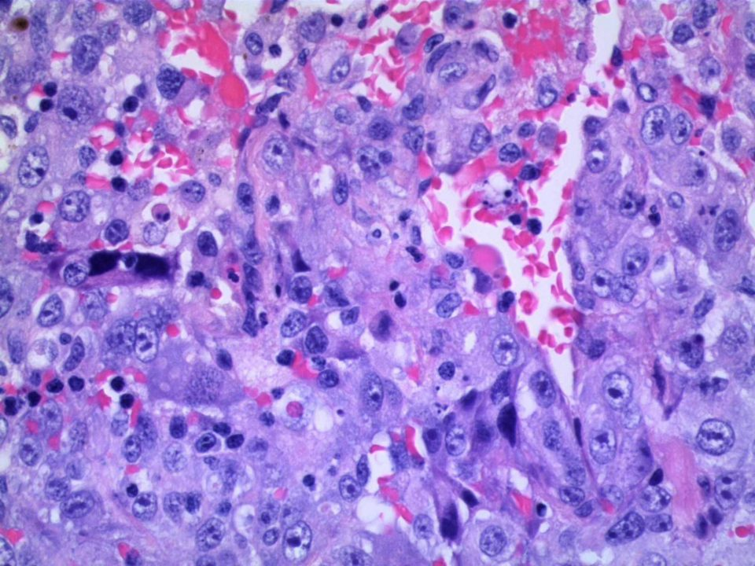

General information only. It does not replace advice from your care team and should not be used to choose a treatment.


At a glance
| How common | 1-2% of soft tissue sarcomas |
| Where | Scalp and face (older people), breast after radiotherapy, arm with lymphoedema (Stewart-Treves syndrome), liver, heart |
| Appearance | A purple patch like a bruise that does not go away |
| Treatment | Surgery and radiotherapy; weekly paclitaxel; immunotherapy in some cases |
Key points
- In the irradiated breast, it appears years after radiotherapy for breast cancer, as purple patches on the skin. It often has MYC amplification.
- On the scalp, often linked to sun damage, it sometimes responds to immunotherapy.
- Liver angiosarcoma is linked to vinyl chloride and arsenic.
Treatment
Wide surgery with radiotherapy where possible; weekly paclitaxel or doxorubicin for advanced disease; immunotherapy (pembrolizumab, nivolumab with ipilimumab) in selected cases, especially head and neck.
See also: Sarcomas, Kaposi sarcoma, Breast cancer.
History · Medicapedia
Angiosarcoma in the history of medicine
How it was discovered, who studied it and how its treatment changed over the centuries, told on Medicapedia, our sister site on the history of medicine.
Read the history on Medicapedia ↗Sources
- Gronchi A, et al. Soft tissue and visceral sarcomas: ESMO-EURACAN-GENTURIS Clinical Practice Guidelines. Ann Oncol. 2021;32:1348-1365. doi:10.1016/j.annonc.2021.07.006
- Florou V, et al. Angiosarcoma patients treated with immune checkpoint inhibitors: a case series of seven patients from a single institution. J Immunother Cancer. 2019;7:213.